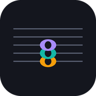

Chord Scope
Tap Listen, then play
Listen
Settings
Key signature
Sets the key signature on the staff and how black-key chords are spelled. “Auto” uses no key signature.
Chord symbols
Sensitivity
Raise it if quiet notes get missed; lower it if extra notes show up or a noisy room triggers it.
Keep ringing notes
With the pedal down, notes from the last chord that are still sounding stay in the chord.
Hold last chord
Keep showing the last chord after you stop playing.
Color noteheads
Color the notes on the staff by their role in the chord.
Tuning: A4 =
Hz
Leave this at 440 for a digital piano. Change it only if an acoustic piano is tuned sharp or flat.
Color key
root
3rd
5th
6th / 7th
9 · 11 · 13
altered
Clear recent chords
Done